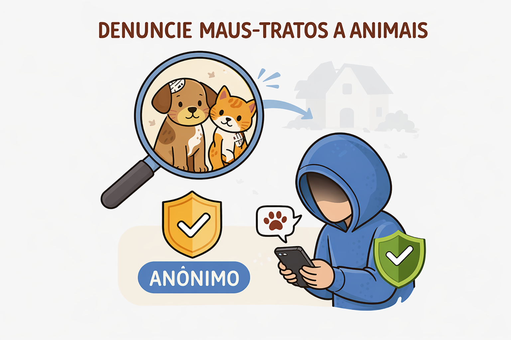

Denunciar maus-tratos a animais é um ato de responsabilidade e cidadania, pois a violência contra animais é crime e precisa ser comunicada para que as medidas cabíveis sejam tomadas. A denúncia é realizada de forma totalmente anônima, garantindo sua segurança e evitando qualquer tipo de exposição. É fundamental agir com seriedade e compromisso com a verdade, já que denúncias falsas prejudicam investigações e podem gerar penalidades legais. Ao denunciar, procure informar com clareza o que está acontecendo, a localização correta, a data e o horário aproximado dos fatos, além de possíveis evidências, como fotos, vídeos ou relatos detalhados.